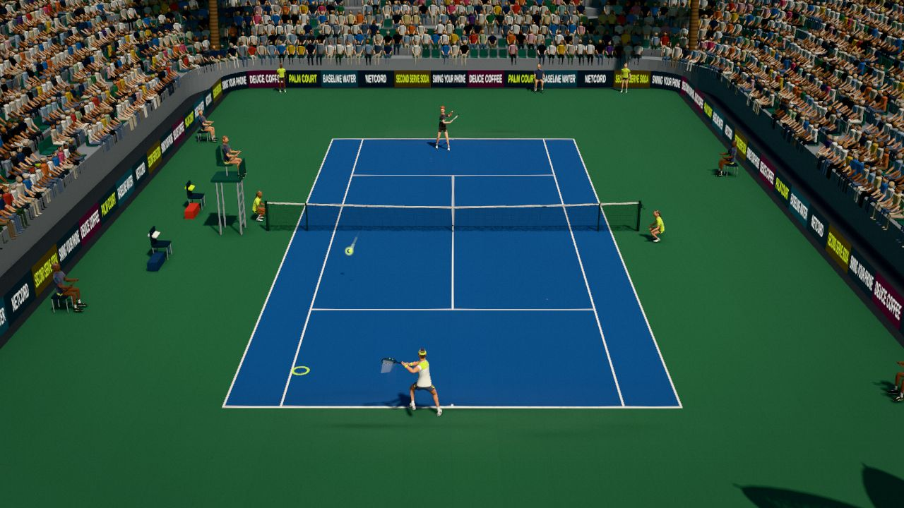

Key takeaways
- At recreational level more points end with an error than with a winner. The first tactic is to make your opponent play one more ball.
- Rally deep and cross-court, where the net is lowest and the court is longest. Change direction only from a short, comfortable ball.
- Build each point in stages: a rally ball, a setup ball that moves the opponent, and a finishing ball into the open court.
- Find the opponent's weaker side early, and keep going there until they prove they can handle it.
Start with the percentages
Tactics is mostly the art of choosing the shot that gives you the best chance. A few facts about the court decide a lot of it. The net is lowest in the middle (0.914 metres) and rises to 1.07 metres at the posts, so a ball hit through the middle has the most room above the net. The diagonal from one baseline corner to the opposite corner is about 1.4 metres longer than a straight line down the court, so a cross-court ball has more room before it goes long. And a ball that lands deep, near the baseline, forces the opponent back and gives them less time. Put those together and you get the basic advice: hit deep, hit cross-court, hit with a margin over the net, and save the risky shots for balls that are short and comfortable.
Two patterns to learn first
- The cross-court rally. Trade shots diagonally until someone hits a short ball. This is the safest pattern on the court, because both players use the longest line and the lowest part of the net. Most of your rallies should be this.
- The change of direction. When a short or slow ball arrives, step in and hit it to the other side, down the line or into the open court. The opponent has been running diagonally and is now caught going the wrong way. It works best when you have made them hit several balls to the same corner first.
A third useful pattern comes from the serve. Serve plus one means planning the first ball after the serve. If you serve wide, the open court is on the other side, and your next shot goes there. Returners can do the same: decide where the return will go before the serve is struck (see how to return serve).
Build the point in three stages
- The rally ball. Safe, deep, with plenty of height over the net. It keeps you in the point.
- The setup ball. A little more adventurous. It moves the opponent: a deeper ball, an angle, a slice to the backhand. It aims to produce a weak reply.
- The finishing ball. After the weak reply, hit into the space the opponent has left, with margin. At the net, it is a volley into the open court.
Impatience is the usual problem. Players try the finishing ball when they have not had the setup ball, and it goes out. If you are not sure whether the ball is a finishing one, it is not.
Find the weaker side
Most players have one shot they trust and one they do not, usually the backhand but not always. Watch in the warm-up and the early games: which side do they step round to avoid, which side do they hit with a slice or a floating ball, where do their errors come from? Test it by hitting a few high balls to that side and see what happens. Once you know, play there often, but not every time, so the opponent cannot just shift across. Also look at the serve: a second serve that is short and slow is a gift.
Playing different opponents
| Opponent | What they do | What works |
|---|---|---|
| The retriever | Gets everything back, rarely misses | Be patient. Hit deep, wait for the short ball, then attack, or use a drop shot to bring them forward. |
| The big hitter | Hits hard and goes for winners, but misses a lot | Keep the ball deep, slow it with height and slice, and let them make the errors. |
| The net rusher | Comes in at every chance | Return low at their feet, lob when they crowd the net, and pass with an angle. |
| The heavy topspinner | Bounces the ball high to your backhand | Take the ball early, or step back, and use the slice to keep it low. |
| The left-hander | Their shots curve the other way, and their forehand cross-court goes to a right-hander's backhand | Expect more balls to the backhand and practise against lefties. |
Position and recovery
After every shot, recover. The ideal position is not always the exact centre of the baseline. It is the spot from which you can reach both of the opponent's likely replies, roughly the middle of the angle they can hit. If they are in the middle of the court, that is the middle. If you have pulled them well wide, it moves a little towards the side they are on. Get back to a balanced ready position, split step as the opponent hits, and you will see the ball earlier.
Between points: keep a plan
A few seconds between points are enough to think. Ask what worked in the last game: where did the points come from? Which serve are you going to use? What is the plan for the first ball after the return? Keep what works and change one thing at a time if it does not. Tactics and nerves go together, and the article on the mental game covers routines for the moments between points.
Drills
- Cross-court until short. Play points where both players must hit cross-court until one hits a short ball; then the point is live.
- Serve plus one. Practise serving to a corner, then hitting the first ball into the open court. Count how many sequences you win.
- Depth game. Rally with a partner, and give a point to the player whose opponent hits short of a marked line, such as the service line.
- Three-ball points. Play points where you must use a rally ball, a setup ball and a finishing ball in order.
- Keep notes. After a match, write down the three patterns that worked and the one that did not.
Try it in Palm Court
The game is a good place to try patterns because the CPU levels behave differently. A Rookie hits almost anywhere, so you can experiment; a Club player plays sensible shots about half the time; a Pro plays the percentages most of the time, so only a good plan beats one. The five pros are also five opponent types: Nolan Jokavic is the retriever, Raul Navidal the heavy topspinner, Rolf Federli the net rusher, Gianni Sinnari the big hitter and Carlito Alcarraza the player of variety. Start a Quick Match from the game page and press C to switch to the TV camera, which shows the whole court so you can see the patterns. After each shot a readout names the direction ("Cross", "Down the line" and so on), so you can check what you hit. Target practice under Play, Training, Drills trains deep cross-court and down-the-line zones. The groundstroke tactics guide and the guide to beating the five pros give the game-specific plans.
